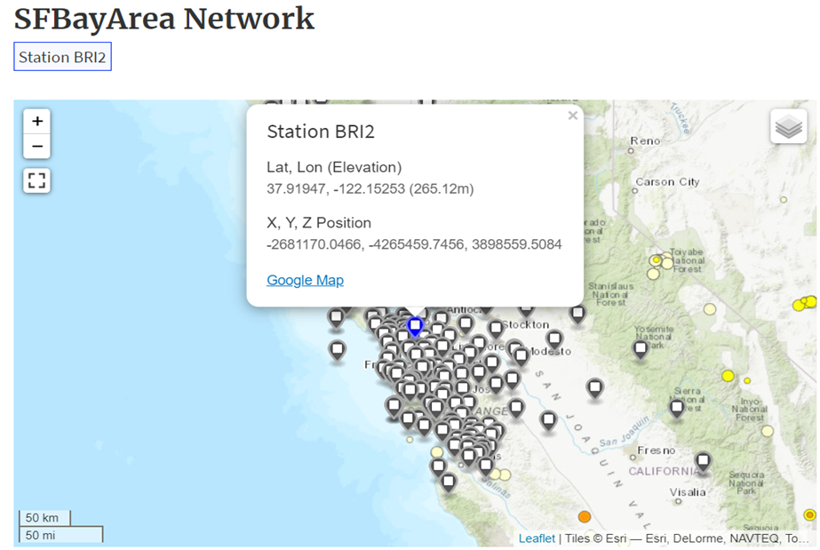
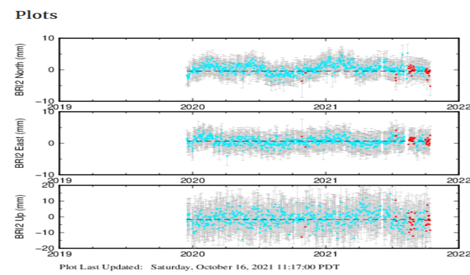
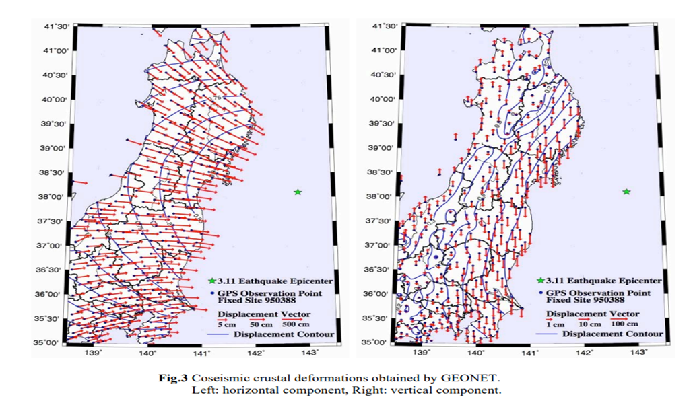
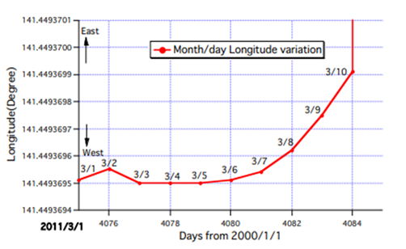
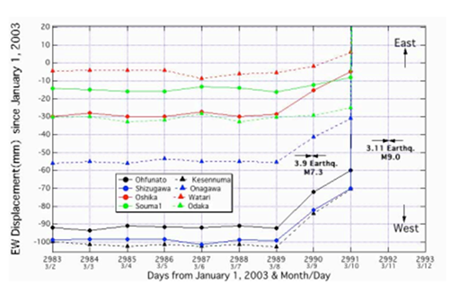

地形变观测技术
写在前面
什么是地形变
地形变（ground deformation）又称地震形变，在地震发生时或地震前后，由于构造运动或地震构造力以及地震波振动作用，地表产生变形的现象
地形变观测
地震会引起如塌方、河流改道等较为明显的地形变，这些可以通过遥感卫星或是航拍的方式，用肉眼直接观测到。
地震会在地球表面形成断层，这些断层在地震发生之后很长一段时间会让地表缓慢地滑落或是缓慢地移动，这种形变范围广、变化小、耗时长，需要用更加精确的GNSS技术来监测地震后的地形变化。
在这里主要讨论第二种
地形变观测技术-GNSS技术
人们通过在地表建立大量的观测站组成观测网，来记录不同时间的地表位移，从而可以获取一整块地区的地形变。
DGPS
DGPS(Differential Global Positioning System)：差分全球定位系统。在位置已精确测定的已知点上配备一台 GPS 接收机作为基准站并和用户同时进行 GPS 观测，将得到的单点定位的结果与基准站坐标比较，求解出实时差分修正值，以广播或数据链传输方式，将差分修正值传送至附近 GPS用户，以修正其GPS定位解，提高其局部范围内用户的定位精度。
简单来说就是通过已知的精确坐标来修正GPS坐标，从而获得更高的精度。
PPP
PPP(Precise Point Positioning)：精密单点定位技术。通过精确的卫星轨道和时间来获取高精度坐标。
二者比较
- 要使用DGPS要求有一个定位精确的基准站且能够收到它的信号，而且距离基准站越远效果越差。
- PPP定位只需要单台GPS接收机就可以进行，由于只有单台接收机，所以必须要持续接收一段时间的数据才能获得精确值，通常大约要等待20分钟左右。
- 可见，两者各有利弊。
- 无论是DGPS还是PPP，它们的计算都非常繁琐，因此一般会由专门的机构计算这些从各个观测站收集到的卫星数据，并把计算结果发布出来。
观测站——观测站实例
- 图示是美国的一个名为
BayArea的观测站网络，现在选中其中一个名为BRI2的观测站。



- 先看单独的观测数据，第一行记录南北的位移，第二行记录东西的位移，第三行记录上下的位移。其中，蓝色的点表示正常记录，红色的点表示发生地震后的记录
- 再看年平均数据，它就是把单独的数据求了个平均值，得到了该观测站的年平均位移
观测研究实例——311日本地震
2011年3月11日，在日本东北部太平洋海域发生9.0级地震，对日本造成了严重的灾难，以下是日本观测网对当时地震的记录

右方的绿色小星星是震源，左图表示横向位移，右图表示纵向位移，可以清晰地看到，日本陆地整体向东位移，并且东部下沉，西部上升
汇总观测网中各个观测站的数据可以很容易感知到地震对陆地的影响
观测地形变的作用
反常地形变可能是地震发生的前兆？

上图是某观测站在3月11日前10天记录的一组数据，可以看到观测站有明显向东偏的趋势，这与地震发生后的变化一致

这张图是多个观测站记录的数据，可以看到在3月9日其实还发生了一场7级的地震，许多观测站开始东偏的原因是这场地震，更有一些观测站，即使在3月9日之后仍然没有明显偏移，这样来看，或许地震前的地形变又无法说明地震即将到来
结论
通过地形变是否能够预测地震到目前为止仍然没有定论，或许还需要更多观测数据和统计才能研究出结果吧
地震后的地形变可能对次生灾害造成影响？
日本作为一个沿海国家，最大的次生灾害便是海啸，陆地的平移翻动是否会影响海啸的影响范围和烈度？还有如汶川地震，地震后的地面运动是否会导致山体滑坡等灾害的发生概率提高？这些也是一个地形变可以研究的方向